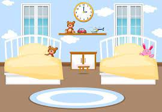

título

Numa belo dia, duas irmãs acharam uma caixa com um mapa que indicava o caminho até um suposto castelo de diamante. Apesar de duvidarem resolveram segui-lo.
 "
"
Elas começaram a busca pela manhã e antes de sair teriam que escolher qual caminho tomar